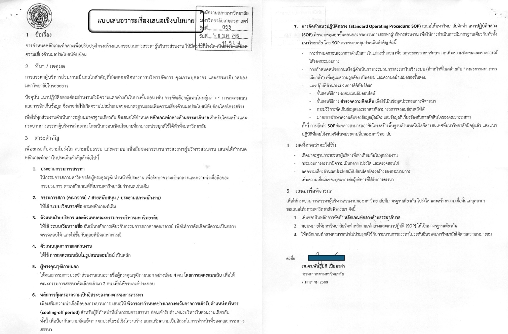

ธรรมาภิบาลในการสรรหาผู้บริหารไม่ควรเป็นเรื่องเฉพาะหน่วย แต่ควรมีหลักเกณฑ์กลางร่วมกัน
{kind=link}

บทความนี้สื่อสารสาระของวาระที่จะเสนอเข้าสู่การพิจารณาของสภามหาวิทยาลัยเกษตรศาสตร์ ว่าด้วยการกำหนด หลักเกณฑ์กลางด้านธรรมาภิบาล สำหรับโครงสร้างและกระบวนการสรรหาผู้บริหารส่วนงาน จุดสำคัญคือการย้ายประเด็นจากการแก้ปัญหาเฉพาะกรณี ไปสู่การวางกรอบเชิงนโยบายที่ใช้เป็นมาตรฐานร่วมได้
ในมุมนี้ ข้อเสนอไม่ได้มุ่งทำให้ทุกส่วนงานเหมือนกันทั้งหมด แต่ต้องการสร้างมาตรฐานเดียวกัน ในเรื่องความโปร่งใส การตรวจสอบได้ และการลดความเสี่ยงด้านผลประโยชน์ทับซ้อนเชิงโครงสร้าง แล้วเปิดพื้นที่ให้แต่ละส่วนงานประยุกต์ใช้ตามบริบทของตัวเอง
สาระสำคัญของโพสต์นี้อยู่ที่การมองว่าปัญหาธรรมาภิบาลในการสรรหาผู้บริหารไม่ควรถูกจัดการแบบเฉพาะกิจเมื่อมีประเด็นเกิดขึ้นแล้ว แต่ควรมีกรอบเชิงนโยบาย ที่วางไว้ล่วงหน้า เพื่อให้ทุกฝ่ายรู้กติกาและลดความเสี่ยงของข้อสงสัยเชิงโครงสร้างตั้งแต่ต้น
มาตรฐานกลางไม่ได้ทำลายความยืดหยุ่น แต่ช่วยให้แต่ละหน่วยใช้ดุลพินิจบนฐานที่ตรวจสอบได้
การเสนอหลักเกณฑ์กลางในที่นี้ไม่ได้หมายถึงการรวมศูนย์ทุกอย่าง หากหมายถึงการสร้างฐานขั้นต่ำที่ทุกหน่วยใช้ร่วมกันได้ในเรื่องความโปร่งใส การตรวจสอบ และการจัดการผลประโยชน์ทับซ้อน จากนั้นแต่ละส่วนงานจึงค่อยปรับรายละเอียดให้เหมาะกับบริบทของตน
มุมนี้สำคัญมาก เพราะมันทำให้การใช้ดุลพินิจไม่ลอยอยู่เหนือหลักการ แต่ยืนอยู่บนกรอบที่ชัดพอจะอธิบายได้ และลดโอกาสที่ความต่างของกระบวนการจะกลายเป็นช่องว่างของความไม่ไว้วางใจ
ธรรมาภิบาลที่ดีเริ่มจากการออกแบบโครงสร้าง ไม่ใช่หวังพึ่งความตั้งใจของบุคคล
ข้อสรุปของบทความนี้จึงเชื่อมกับแนวคิดใหญ่เรื่อง governance ว่า หากต้องการลดความเสี่ยงด้านผลประโยชน์ทับซ้อนเชิงโครงสร้าง เราต้องออกแบบกติกาและโครงสร้างให้ดีตั้งแต่ต้น ไม่ใช่ฝากความหวังไว้กับบุคคลว่าจะตัดสินใจได้ดีเสมอในทุกบริบท
นี่จึงเป็นตัวอย่างของการทำงานเชิงนโยบายที่พยายามเปลี่ยนระบบจากระดับโครงสร้าง เพื่อให้การสรรหาผู้บริหารมีความน่าเชื่อถือมากขึ้นในระยะยาว มากกว่าการแก้ปัญหาเป็นรายกรณีเมื่อความไว้วางใจเสียหายไปแล้ว